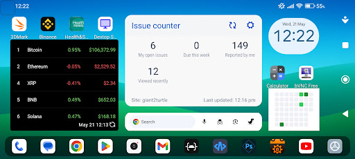
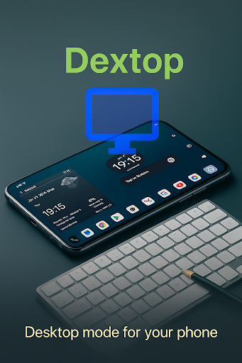

01Why Stock Android & DeX Leave Most Phones Behind
Modern Android phones ship with 8-core Snapdragon, Tensor, or Dimensity silicon and 8–16GB of fast RAM—plenty for writing, spreadsheets, coding, and research. Yet plugging a standard phone into a monitor hits three immediate walls:
Black Pillar Bars
Standard screen mirroring projects a narrow 9:16 phone strip onto a 16:9 monitor, wasting over half the display.
Stretched Launchers
Rotating stock launchers stretches portrait widgets awkwardly and gives you no desktop taskbar or mouse-friendly switcher.
Locked Ecosystems
Samsung DeX and Moto Ready For are locked to flagship models—leaving Pixel, Xiaomi, OnePlus, and budget users out.
02The Universal Fix: Dextop & Dextop Core
Trusted by over 300,000 users, Dextop brings a lightweight, brand-agnostic landscape desktop environment to any Android phone, tablet, or foldable.
True 16:9 / 16:10 Landscape UI
Built from the ground up for horizontal screens, filling external monitors, tablets, and foldables edge-to-edge.
Independent Desktop Space
Your normal portrait home screen stays untouched while Dextop holds dedicated work apps, widgets, and folders.
Desktop-Grade Taskbar
Launch apps, switch tasks, and manage quick controls comfortably with a mouse or keyboard.
Zero Root or ADB Hacks
Installs in seconds straight from Google Play—under 10MB with no bootloader unlocks or warranty risks.


Dextop: Desktop Environment for Android
Native landscape UI, persistent taskbar, and independent desktop shortcuts. Over 300k+ installs worldwide.
033 Proven Hardware Setups (From $0 to Full Desk)
Tablet / Foldable Rig
Run Dextop directly on an Android tablet or foldable. Pair a compact folding Bluetooth keyboard and mouse for coffee-shop work.
Hotel / Travel Rig
Pack a slim USB-C to HDMI adapter. Plug into any hotel TV or Airbnb monitor and work on the big screen without hauling a laptop.
Full Desk Workstation
Use a USB-C hub with HDMI, USB-A, and Power Delivery. Power a 27-inch monitor, mechanical keyboard, and mouse while fast-charging.

04Choosing Your Edition: Dextop vs. Dextop Core
Some manufacturers restrict third-party launchers when gesture navigation is enabled. Pick the edition built for your phone:
| Feature | Dextop (Standard) | Dextop Core |
|---|---|---|
| Best For | Standard Android devices allowing custom launchers | Restricted OEMs (Xiaomi HyperOS, locked carrier phones) |
| Mode | Full standalone landscape launcher | Companion landscape environment (no default-launcher swap) |
| Shortcuts | Custom grid, widgets & folders | Dedicated landscape dock |
| Download | Google Play Store | Play Store (Core) |
If your phone disables full-screen navigation gestures with third-party launchers, choose Dextop Core—it delivers the desktop workspace without replacing your system launcher.
055 Real-World Workflows
Cloud Dev & SSH
Run Termux, SSH into remote servers, or open VS Code via code-server in Chromium for full Linux access from your pocket.
Distraction-Free Writing
Pair Notion, Obsidian, or Google Docs with a physical keyboard for focused, multi-day battery writing sessions.
Car Dashboard & Head-Unit
Mount a tablet horizontally for oversized, glanceable landscape buttons for Maps, Spotify, and podcasts.
Budget Student PC & Kiosks
Pair a phone with a secondhand HDMI monitor for essays and Zoom calls—or mount budget tablets as clean storefront kiosks.
06Samsung DeX vs. Stock Android vs. Dextop
| Capability | Samsung DeX | Stock Mirroring | Dextop |
|---|---|---|---|
| Compatibility | Flagship Galaxy only | All devices | Any Android device |
| Landscape UI | Yes | Pillarboxed / Stretched | Native 16:9 desktop |
| Separate Layout | Yes | Clutters phone screen | Independent workspace |
| Tablets & Foldables | Galaxy Tabs only | Clunky | Universal support |
| Footprint | Heavy system service | Basic | Lightweight (< 10MB) |
07Frequently Asked Questions
Can I get a Samsung DeX experience on Google Pixel, Xiaomi, or Motorola?
Yes. While Samsung DeX is locked to high-end Galaxy phones, Dextop works across Pixel, Xiaomi, Motorola, OnePlus, Nothing Phone, and virtually any Android smartphone or tablet.
Do I need an expensive USB-C dock or monitor to use Dextop?
No. Dextop works standalone directly on your phone, tablet, or foldable screen. To connect an external monitor, an inexpensive $15–$25 USB-C to HDMI adapter is all you need.
Does Dextop require root access or ADB commands?
No. Dextop installs like any standard app from Google Play—zero root privileges, bootloader unlocks, or developer scripts required.
Will Dextop mess up my existing portrait home screen?
No. Dextop maintains independent landscape desktop shortcuts, leaving your standard portrait home screen icons, widgets, and wallpaper untouched.
Unlock Your Phone's Desktop Power
Join 300,000+ users turning their Android phones and tablets into versatile widescreen workstations.